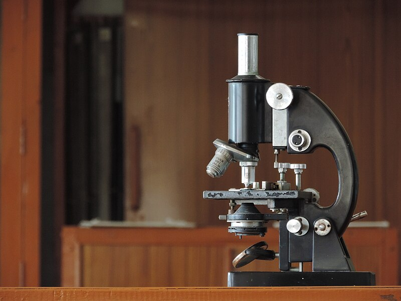

探
本節探究 顯微鏡、相機、眼睛，是不是同一套成像邏輯？
比較物鏡、目鏡、水晶體與眼鏡
顯微鏡把細胞放大；相機把景物縮小拍進底片；近視看遠的東西模糊。先預測：相機和眼睛比較像「把像接到一個平面上」，顯微鏡比較像「再放大給眼睛看」嗎？下面兩站比較物鏡、目鏡、水晶體與眼鏡。
探究問題：顯微鏡、相機、眼睛，是不是同一套成像邏輯？
比較物鏡、目鏡、水晶體與眼鏡
顯微鏡把細胞放大；相機把景物縮小拍進底片；近視看遠的東西模糊。先預測：相機和眼睛比較像「把像接到一個平面上」，顯微鏡比較像「再放大給眼睛看」嗎？下面兩站比較物鏡、目鏡、水晶體與眼鏡。
複式顯微鏡、照相機都用透鏡成像
探究線索：顯微鏡的物鏡先成什麼像？目鏡再扮演什麼角色？相機的底片（或感光元件）接得到的，比較像實像還虛像？
| 複式顯微鏡 | 照相機 | |
|---|---|---|
| 構造 | 物鏡、目鏡都是 。 物鏡愈長，焦距愈大、放大率愈高；目鏡愈短，焦距愈小、放大率愈高。 光圈調節進光量。反光鏡一面平面、一面 。 | 鏡頭相當於凸透鏡。光圈調節進光量，快門控制曝光時間，感光元件記錄影像。 |
| 成像 | 標本放在物鏡的 ， 先成 於目鏡焦點內，目鏡再成 。 最終的像 ， 且為虛像。 | 景物在鏡頭 ， 在感光元件上成 。 手機螢幕會再用軟體把影像轉正。 |
望遠鏡、投影機、放映機也是透鏡成像的應用。

這台用反光鏡進光（一面平面、一面凹面鏡）。成像關係仍看上面的表。照片：Wikimedia Commons（CC BY-SA）
相機鏡頭、眼睛的水晶體，都把遠方景物成倒立縮小實像在感光元件或視網膜上。手機螢幕看起來是正的，是軟體把影像轉正；大腦也會把視網膜上的倒像「看成」正立。不要以為感光元件上的像本來就是正的。
1. (
) 複式顯微鏡最終成像為倒立放大的實像。
訂正：
2. ( ) 較大景物必須在相機鏡頭兩倍焦距外，才能在感光元件上形成完整的像。
1. 複式顯微鏡的目鏡、物鏡都是 透鏡；反光鏡常用 面鏡。
2. 相機光圈愈大，進光量愈 。
3. 顯微鏡最終成像為 （A）正立放大實像 （B）倒立放大虛像 （C）倒立縮小實像 （D）正立縮小虛像 →
4. 標本應放在物鏡的 。
5. 手機拍大樹，樹在鏡頭 ； 感光元件上是 。
這一站的證據：顯微鏡最終多為倒立放大虛像；相機把倒立縮小實像接到感光面。下一站看眼睛：水晶體調焦，眼鏡怎麼補？
水晶體調焦；近視凹、遠視凸
探究線索：近視是像落在視網膜前還後面？要讓光線先「散一點」再進入眼睛，該戴凸透鏡還凹透鏡？
光線 → 角膜 → 瞳孔 → 水晶體（折射，睫狀肌調焦）→ 視網膜成 → 視神經 → 大腦轉成正立的視覺。
| 眼睛 | 瞳孔 | 水晶體 | 視網膜 |
|---|---|---|---|
| 相機 |
看近物時，睫狀肌收縮，水晶體變 （彎曲度變大），焦距變 。
| 近視眼 | 遠視眼 | |
|---|---|---|
| 成因 | 眼球過長，或水晶體焦距過短 | 眼球過短，或水晶體焦距過長 |
| 成像位置 | 落在視網膜 | 落在視網膜 |
| 矯正 | 配戴 透鏡，使光線先發散 | 配戴 透鏡，使光線先會聚 |
老花眼：水晶體調節機能衰退，看近物不清楚，配戴適當焦距的 透鏡。近視的人老了仍可能有老花。
物體在視網膜上所成的像是 （A）正立放大 （B）正立縮小 （C）倒立縮小 （D）倒立放大 →
凹透鏡矯正近視（像落在網膜前，先發散一下再進去）；凸透鏡矯正遠視或老花（先會聚一下）。老花是水晶體「調不厚」，看近不清楚，所以也戴凸透鏡。本來近視的人老了，仍可能再出現老花，兩種可以同時存在。
1. (
) 瞳孔與感光元件的功能相似。
訂正：
2. ( ) 近視眼成像在視網膜之前。
3. ( ) 凸透鏡可矯正遠視。
4. (
) 近視眼不會老花。
訂正：
這一站的證據：近視像在網膜前、戴凹透鏡；遠視／老花像在網膜後或調焦不足、戴凸透鏡。收成速記後，就能回答本節問題。
證據卡：這些句子用來支撐下面的「本節主張」。先對照儀器成像，再決定你同不同意。
| 觀念 | 記住這句 |
|---|---|
| 顯微鏡 | 兩片凸透鏡；最終倒立放大虛像 |
| 相機／眼睛 | 倒立縮小實像（在感光元件／視網膜） |
| 近視 | 像在網膜前，戴凹透鏡 |
| 遠視／老花 | 像在網膜後或調焦不足，戴凸透鏡 |
儀器差在「像要接到哪裡、再給誰看」
複式顯微鏡的物鏡、目鏡都是凸透鏡，最終多成倒立放大虛像。照相機與眼睛都把倒立縮小實像接到感光面／視網膜。近視像在網膜前、戴凹透鏡；遠視／老花像在網膜後或調焦不足、戴凸透鏡。
下一站要問：白光裡真的藏著彩虹嗎？ 先用下面練習檢驗你的主張。
基本題 5 題 ＋ 進階題 5 題
檢驗主張：做題時對照本節問題——顯微鏡、相機、眼睛，是不是同一套成像邏輯？
1. 複式顯微鏡的物鏡與目鏡都是 。
2. 顯微鏡最後看到的像是倒立放大 。
3. 照相機在感光元件上成倒立縮小 。
4. 近視眼成像在視網膜 ， 要配戴 矯正。
5. 遠視眼或老花眼要配戴 矯正。
1. 顯微鏡標本放在物鏡的焦距與 之間，先成放大實像。
2. 照相時景物必須在鏡頭 。
3. 眼睛的水晶體相當於相機的 ， 瞳孔相當於 。
4. 近視眼鏡拿離眼睛後看課本，字會變 （凹透鏡成正立縮小虛像）。
5. 正常眼睛看遠時，像成在 上；看近時睫狀肌收縮，水晶體變 。